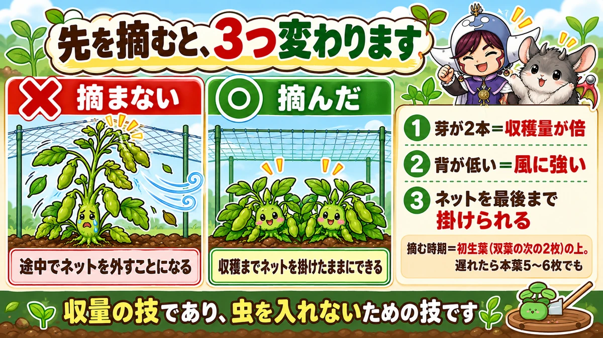
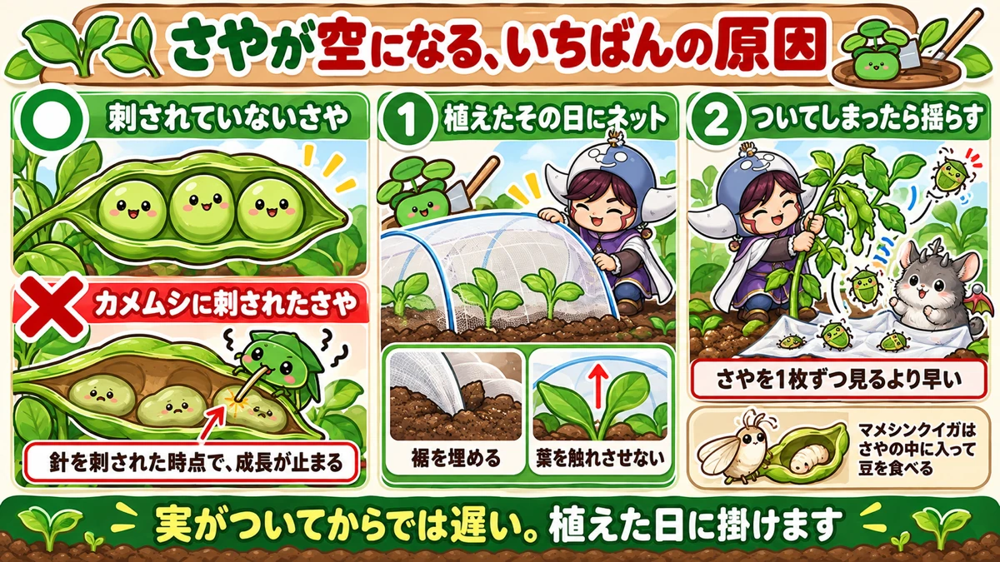
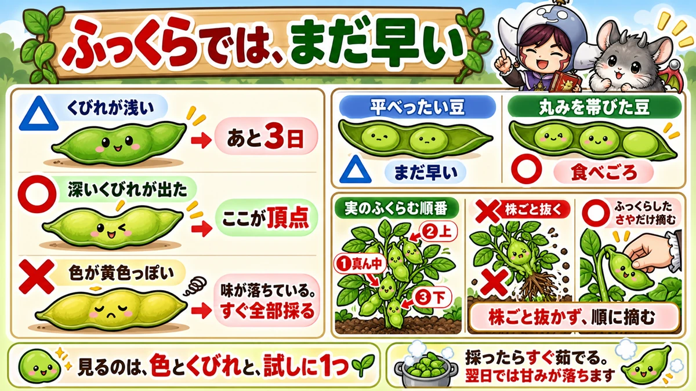

枝豆は先を摘むと2倍穫れます 背が低くなるのが本当の理由
「さやはできたのに、中が空っぽだった」
「いつ穫ればいいのか分からない」
「葉ばかり茂って、実がつかない」
どうも、8150（えいこう）です🌱 家庭菜園歴8年、理科の教員免許を持っていて、有機・無農薬で野菜を育てています。
前回はとうもろこしでした。今日は枝豆です。
先に、この記事でいちばん言いたいことを言っておきますね。
★枝豆は、小さいうちに先を摘むと収穫量が倍になります。
でも★本当に効くのは、そこじゃないんです。摘むと背が低くなる。だから★防虫ネットを収穫まで掛けたままにできる。ここが本命です
まず、枝豆の基本データ
3つだけ押さえてください
- 科：マメ科（そら豆・えんどう・落花生の仲間。同じ場所は3〜4年あける）
- タネまき：4月〜6月（1か所に2〜3粒）
- 植え付け：本葉2〜3枚のころ（株間30cm）
※時期は中間地（関東〜関西の平野部）が目安。寒い地域は少し遅らせ、暖かい地域は早めに。
📖 この記事の目次
肥料は、ほとんど要りません
ここが枝豆の変わっているところです。
★元肥は入れなくてかまいません。
私は★草丈が10cmになってから、初めて油かすなどを株元に少しまきます。前作の肥料が残っていそうな畑なら、★そのまま無肥料でも育ちます。
理由は、このあとの理科パートでお話しします。
★肥料をやりすぎると、実がつきません
そして、これが「葉ばかり茂る」の答えです。
★窒素が多すぎると、つるボケします。
葉と茎ばかり立派になって、さやがつかない。★よかれと思って足した肥料が、そのまま裏目に出るんですよね。
枝豆に関しては、★足りないくらいでちょうどいいです。
★先を摘むと、いいことが3つあります

やるのは、すごく早い時期
タイミングは、思っているよりずっと早いです。
タネから育てた場合、双葉の次に★2枚の葉（初生葉）が出ます。そのすぐ上の芽を摘みます。
★ハサミでも、指でつまんでも大丈夫です。
「もう摘んでしまったの？」という時期でかまいません。私も最初は不安でしたが、問題ありませんでした。
タイミングを逃した方は、★本葉5〜6枚のころでも間に合います。
①芽が2本になって、倍穫れる
先を摘むと、その付け根から★新しい芽が2本伸びてきます。
主軸が1本だったものが、2本になる。★単純に、さやのつく場所が倍になります。
これが「摘心すると倍穫れる」と言われる理由です。
②背が低くなって、風に強い
2本に分かれるかわりに、★株の背は低くなります。
枝豆は意外と背が高くなる野菜で、実が重くなるころに風で倒れます。★低いほうが、素直に強いです。
★③ネットを、最後まで掛けられる
そして本命がこれです。
背が低いと、★防虫ネットのトンネルを、収穫まで掛けたままにしておけます。
背が高くなる株だと、途中でネットに葉が当たって、外さざるをえません。★外した瞬間に、虫が来ます。
つまり摘心は、収量の技であると同時に★虫を入れないための技でもあるんですよね。ここに気づいてから、私の枝豆は安定しました☺️
★さやが空になる、いちばんの原因

針を1回刺されると、止まります
さやはできたのに、中に豆が入っていない。あれを空さやといいます。
いちばんの原因が★カメムシです。
★さやに針を刺されると、その時点で成長が止まります。豆が入らないまま、ぺったんこで終わります。
もうひとつ★マメシンクイガという虫もいて、こちらは★さやの中に入って豆を食べます。
だから、植えたらすぐネット
対策はひとつです。★苗を植えたら、その日にネットを掛けます。
「実がつき始めてから」では遅いです。★虫は、実がつくのを待って来ますから。
掛けるときのコツが2つ。
- ★裾に土をしっかり乗せる（すき間から入ります）
- ★葉がネットに触れないようにする（触れていると、外から卵を産まれます）
摘心して背が低くしてあれば、★このネットを最後まで掛けたままにできます。話がつながりましたね。
ついてしまったら、揺らす
もう入られていた場合です。
さやを1枚ずつ確認するのは、正直しんどいです。私も途中で心が折れました😅
かわりに★株を小刻みに揺らしてください。
強くゆする必要はありません。軽く小刻みに。★ついている幼虫は、たいてい下に落ちます。落ちたものを取り除いて、それからネットを掛け直します。
空さやの原因は、あと2つ
水不足
★さやが太る時期、枝豆は驚くほど水を欲しがります。
ここで乾かすと、豆が太りません。★花が咲いたら、乾かさないことを意識してください。
マルチを張っていない方は、★株のまわりにわらや刈った草を敷いておくと、ずいぶん違います。
日照不足（これは待つ）
梅雨が長い年は、日が足りなくて膨らみが遅れます。
これには★予防策がありません。そして大事なのはここです。
★成長が遅いからといって、追肥や水やりを増やさないでください。
つるボケや病気を招いて、かえって失敗します。★梅雨が明ければ、たいてい追いついてきます。待つのも作業のうちですね。
ついでに、傷んだ葉は取る
食べられてボロボロになった葉や、枯れた葉は★取ってしまってかまいません。
光が下の葉に届くようになりますし、風も通ります。★残しておいても仕事をしてくれません。
★収穫は、3日で変わります

目印がない野菜です
枝豆がむずかしいのは、ここです。
★「花から何日」で言い切れません。玉ねぎのように★葉が倒れる合図もありません。
だから自分で見極める必要があります。見るところは3つです。
①色
さやが★鮮やかな黄緑色をしているあいだが食べごろです。
★黄色っぽくなってきたら、味が落ちはじめています。そのときは迷わず、全部収穫してください。
★②くびれ
これがいちばん確実です。
ふっくらしただけでは、まだ早いです。★豆と豆のあいだに、深いくびれが出てきたときが頂点です。
横から見てください。くびれが浅ければ、あと3日ほど待ちます。★この3日で、甘さがはっきり変わります。
③試しに1つ、割ってみる
迷ったら、1つ採って割ってみてください。
- 豆が★平べったい … まだ早い
- ★丸みを帯びている … 食べごろ
お店で買った枝豆と並べてみるのも手です。★自分の目盛りができます。
株ごと抜かないでください
最後にもうひとつ。★さやは、真ん中から先に膨らみます。そのあと上下です。
だから★株ごと引き抜くと、真ん中しか熟していない状態で全部採ることになります。
★膨らんださやから、順番に摘んでください。そのほうが長く、しかもおいしい時期のものだけを穫れます。
採ったら、すぐ茹でる
枝豆は★収穫した瞬間から甘みが落ちていきます。
翌日に茹でると、はっきり味が違います。★午後に採って、そのまま台所へ。これがいちばんのぜいたくです。
すぐ茹でられないときは、★とにかく先に冷やしてください。
学ぶ：根に、肥料工場がついています🔬
根粒菌という同居人
なぜ枝豆は肥料が要らないのか。根を掘ると答えがあります。
★マメ科の根には、小さな白い粒がびっしりついています。
これは病気ではありません。★根粒菌という細菌が住んでいる部屋です。
空気から肥料を作っている
この菌がすごいんです。
★空気中の窒素を取り込んで、植物が使える形に変えています。
空気の約8割は窒素です。でも、そのままでは植物は使えません。★窒素肥料というのは、その「使えない窒素」を使える形に変えたもの。
★根粒菌は、それを土の中でやってのけています。
だから、足すと余る
ここまで来ると、つるボケの理由が分かります。
★自分で窒素を作っているところに、外から窒素を足す。当然、余ります。
余った窒素は葉と茎に回ります。★葉ばかり茂って実がつかないのは、そういうことなんですよね。
抜いたときに根を見てみてください。★理屈より、あの白い粒を1回見るほうが記憶に残ります☺️
まとめ
ここまで読んでくださって、ありがとうございます！
- ★枝豆はマメ科。株間30cm、1か所2〜3粒
- ★元肥は要らない。草丈10cmから1回目
- ★窒素が多いとつるボケして実がつかない
- ★初生葉の上で先を摘む。指でOK
- ★摘心で芽が2本になり、収穫量が倍
- ★背が低くなって風に強い
- ★そして防虫ネットを収穫まで掛けたままにできる
- ★空さやの主因はカメムシ。針を刺されると成長が止まる
- ★植えたその日にネット。裾を埋め、葉が触れないように
- ★ついたら株を小刻みに揺らして落とす
- ★花が咲いたら乾かさない。わらを敷く
- ★日照不足のときは、追肥せずに待つ
- ★収穫は色・くびれ・試し割りの3点で見る
- ★さやは真ん中から膨らむ。株ごと抜かず、順に摘む
- ★採ったらすぐ茹でる
全部やろうとしなくて大丈夫です。まずは★次に育てるとき、初生葉の上を1回摘んでみてください。それだけで株の形が変わります
次回は、かぼちゃの話です。★放っておくほど穫れる野菜と、その落とし穴をお話しします🎃
枝豆のタネ
摘心して枝を増やす育て方をするので、株数はそこまで要りません。粒の大きい品種がおすすめです。
![[商品価格に関しましては、リンクが作成された時点と現時点で情報が変更されている場合がございます。]](https://hbb.afl.rakuten.co.jp/hgb/552615f0.9cc2855e.552615f1.776f7de9/?me_id=1251188&item_id=10000185&pc=https%3A%2F%2Fthumbnail.image.rakuten.co.jp%2F%400_mall%2Fyonezawa%2Fcabinet%2Ftane01%2F1011mame%2Fbeerfriendgf.jpg%3F_ex%3D240x240&s=240x240&t=picttext "[商品価格に関しましては、リンクが作成された時点と現時点で情報が変更されている場合がございます。]")

防虫ネット
カメムシにさやを刺されると中身が残りません。花が咲く前からかけておきます。
![[商品価格に関しましては、リンクが作成された時点と現時点で情報が変更されている場合がございます。]](https://hbb.afl.rakuten.co.jp/hgb/56bc205d.0066fedc.56bc205e.af56d163/?me_id=1260467&item_id=10000299&pc=https%3A%2F%2Fthumbnail.image.rakuten.co.jp%2F%400_mall%2Fmarsol-morishita%2Fcabinet%2Fshouhinn%2Fbouchuu%2Fimgrc0090950099.jpg%3F_ex%3D240x240&s=240x240&t=picttext "[商品価格に関しましては、リンクが作成された時点と現時点で情報が変更されている場合がございます。]")
米ぬか
根粒菌が働くので窒素は控えめでいいのですが、土の微生物は多いほうが安定します。
![[商品価格に関しましては、リンクが作成された時点と現時点で情報が変更されている場合がございます。]](https://hbb.afl.rakuten.co.jp/hgb/56d21cb1.eebb183f.56d21cb2.51de80a8/?me_id=1247635&item_id=10000021&pc=https%3A%2F%2Fthumbnail.image.rakuten.co.jp%2F%400_mall%2Feco-hiryo%2Fcabinet%2Fitem6%2Fset-1-a1.jpg%3F_ex%3D240x240&s=240x240&t=picttext "[商品価格に関しましては、リンクが作成された時点と現時点で情報が変更されている場合がございます。]")
あわせて読みたい